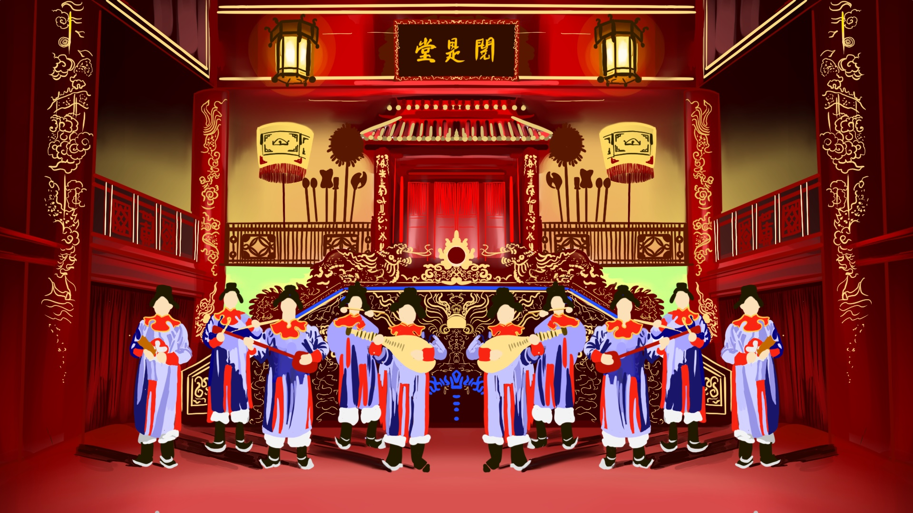
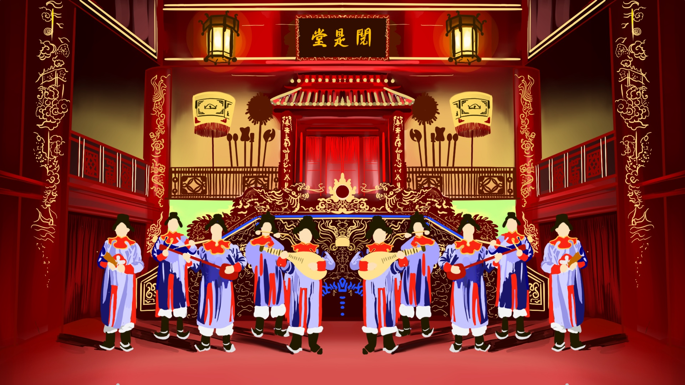

HÁT THEN - THEN SINGING
Hát Then, or Then singing, is a traditional form of Vietnamese folk music and spiritual practice originating from the Tay, Nung, and Thai ethnic groups in northern Vietnam, especially in provinces like Cao Bang, Bac Kan, and Lang Son. Rooted in indigenous spiritual beliefs, hát then was often performed in rituals to connect with the heavens, seek blessings, and express wishes for peace, health, and prosperity. In hát then, performers sing while playing the đàn tính, a traditional string instrument with a long neck and a gourd body. The lyrics often recount mythical journeys, spiritual narratives, and themes of love and daily life, blending spiritual elements with folk storytelling. Though traditionally performed in ceremonial settings, hát then has evolved into a form of entertainment and is celebrated today as a cultural heritage. Efforts are ongoing to preserve hát then, recognized as an intangible cultural heritage that reflects the spiritual and social values of the northern ethnic communities in Vietnam.